计算机组成原理笔记
1 计算机系统概论
计算机的性能指标
- 吞吐量 表征一台计算机在某一时间间隔内能够处理的信息量。
- 响应时间 表征从输入有效到系统产生响应之间的时间度量，用时间单位来度量。
- 利用率 在给定的时间间隔内系统被实际使用的时间所占的比率，用百分比表示。
- 处理机字长 指处理机运算器中一次能够完成二进制数运算的位数，如32位、64位。总线宽度一般指CPU中运算器与存储器之间进行互连的内部总线二进制位数。
- 存储器容量 存储器中所有存储单元的总数目，通常用KB、MB、GB、TB 来表示。
- 存储器带宽 单位时间内从存储器读出的二进制数信息量，一般用字节数/秒表示。
- 主频/时钟周期 CPU的工作节拍受主时钟控制，主时钟不断产生固定频率的时钟，主时钟的频率(/)叫CPU的主频。度量单位是 MHz(兆赫兹)、GHz(吉赫兹)。
- CPU 时钟周期 即主频的倒数，度量单位是 \(\mu s\)、\(ns\)。
- CPU 执行时间 表示CPU执行一般程序所占用的CPU时间，可用下式计算：CPU 执行时间 = CPU 时钟周期数 \(\times\) CPU 时钟周期
- CPI 表示每条指令周期数，即执行一条指令所需的平均时钟周期数。用下式计算：CPI = 执行某段程序所需的CPU时钟周期数 / 程序包含的指令条数
- MIPS (Million Instructions Per Second) 的缩写，表示平均每秒执行多少百万条定点指令数，用下式计算：MIPS=指令数/程序执行时间 \(\times 10^6\)
- FLOPS (Floating-point Operations Per Second) 的缩写，表示每秒执行浮点操作的次数，用来衡量机器浮点操作的性能
杂项
- 计算机硬件组成要素：运算器、存储器、控制器
- 冯·诺依曼架构：指令和数据放在同一个存储器
- 哈佛结构：指令和数据分放在两个存储器
2 运算方法和运算器
数据与文字的表示方法
- 计算机中常用的数据格式：定点格式、浮点格式
- 定点格式：纯小数：最高位是符号位，剩下的位是小数部分，取值范围 \(0\leq |x| \leq 1-2^{-n}\)；纯整数：最高位是符号位，剩下都是整数部分，取值范围 $ 0\leq |x| \leq 2^n-1$
- 浮点格式：任意一个十进制数 \(N=10^E\dots M\)，因此可以表示为四部分：阶符、阶码、数符、数码
- 数的机器码表示方法：
- 原码表示法：用最高位表示符号，其余位表示数值
- 补码表示法：用最高位表示符号，其余位表示数值，符号位参与运算
- 原码 \(\rightleftharpoons\) 补码：从最低位直到遇到的第一个 1 的这段序列不变，其余位除了符号位均取反
- 移码表示法：移码常用于表示浮点数的阶码（指数部分）， \([e]_y=2^k+e_{acutal~number}\) ，符号位的规律和原码、补码相反
- IEEE 754 标准：31(S，符号)、30-23(E，阶码)、22-0(M，数值)，其中，\(E=e_{acutal~number}+127\)，为什么是 +127？因为当 \(E=255\) 时，被用来表示特殊数值了
- 在 IEEE 754 标准中，当 \(0<E<255\) 时，表示规格化数，否则一定不是规格化数，具体是啥查书 22 页
定点加法、减法运算
- 补码加法：符号位参与运算，直接加就行
- 补码减法：把 \([x]_{complementary~code}\) 变成 \([-x]_{complementary~code}\)，从最低位直到遇到的第一个 1 的这段序列不变，其余位包括符号位均取反
- 溢出检测：双符号运算，若运算后两个符号位异号，则发生溢出；符号位产生的进位和 \(\oplus\) 最高有效位产生的进位，1 为溢出，0 为正常
定点运算器的组成
分为逻辑运算（逻辑非、逻辑加、逻辑乘、逻辑异或）和多功能算术/逻辑运算单元
浮点运算方法和浮点运算器
设有两个浮点数 \(x\) 和 \(y\) ，他们分别为：\(x = 2^{E_x} \cdot M_x\)，\(y = 2^{E_y} \cdot M_y\)。
浮点加减法运算
\(z=x\pm y=(M_x \pm 2^{E_x-E_y}\pm M_y)2^{E_y}\)
六步：零操作数检查、对阶、尾数加减运算、规格化、溢出检查（阶码）、舍入
浮点加乘除运算
\(x\times y=2^{E_x+E_y} \cdot (M_x \times M_y)\)
\(x \div y=2^{E_x-E_y} \cdot (M_x\div M_y)\)
3 存储系统
存储系统概述
- 程序的局部性原理：在某一段时间内频繁访问某一局部的存储器地址空间， 而对此范围以外的地址空间则很少访问的现象。
- 多级存储系统：寄存器 cache（CPU 内） - cache 主存储器（主板内）- 磁盘光盘（主板外）- 磁带
- 内存包括主存和 Cache
- 各级别组成材料
- 寄存器（内存储器）：半导体
- 高速缓冲存储器（cache）：半导体
- 主存：半导体
- 外存储器（外存、辅存）：可以由非半导体器件或固态半导体存储器构成
- 主存分类：RAM 和 ROM
- RAM 分类（掉电丢失数据）：SRAM（不掉电则记忆不丢失）、DRAM（随着时间推移，电荷会逐渐漏掉，要周期性地刷新）
- ROM 分类（掉电不丢失数据）：掩膜 ROM、一次可编程 ROM（PROM）、可擦除 PROM（EPROM）、紫外线擦除 EPROM（UV-EPROM）、电擦除 EPROM（EEPROM）、闪速（FLASH）只读存储器
- 端模式：大端模式（高字节放低地址、低字节放高地址），小端模式（低字节放低地址、高字节放高地址）
- 存储器的技术指标：存储容量、存取时间、存储周期、存储器带宽
静态随机存储器
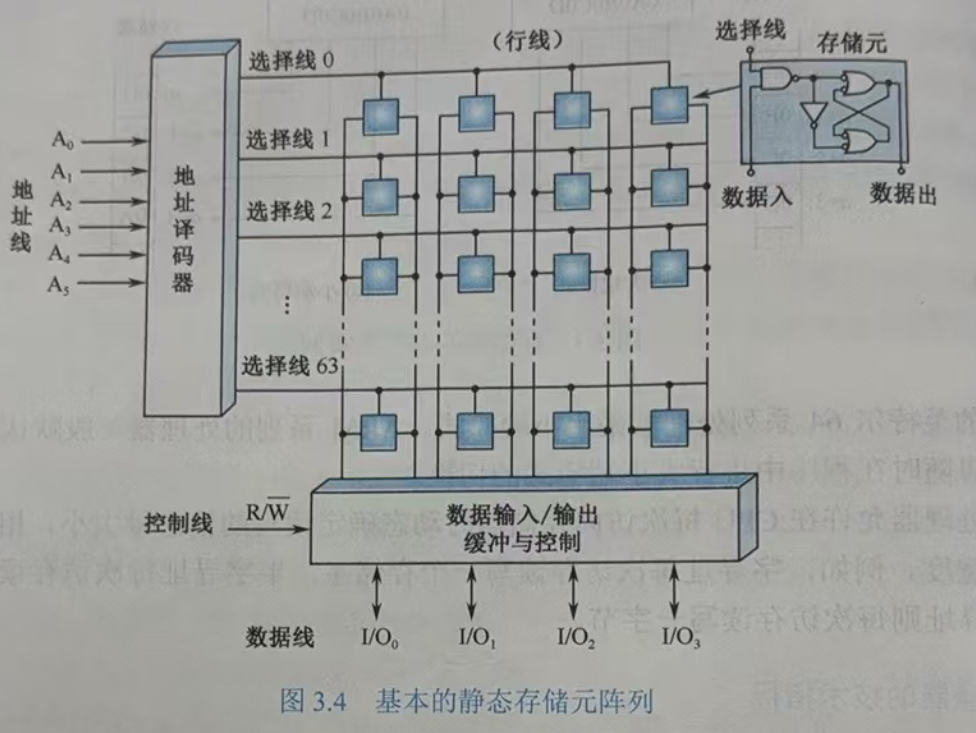
- 任何 SRAM 都有三组信号线：地址线、数据线、控制线
- 存储器容量的扩充：位扩展、字拓展、位字扩展
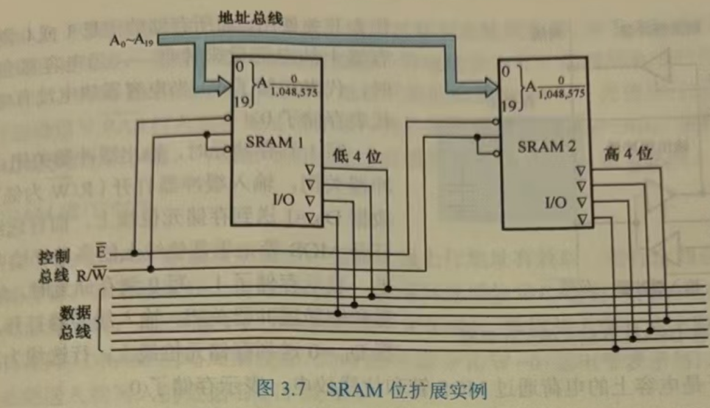
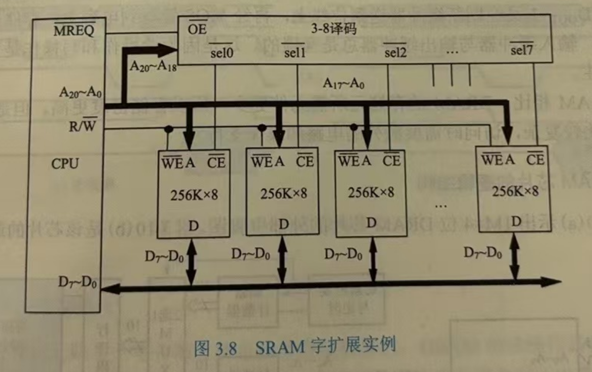
动态随机存储器
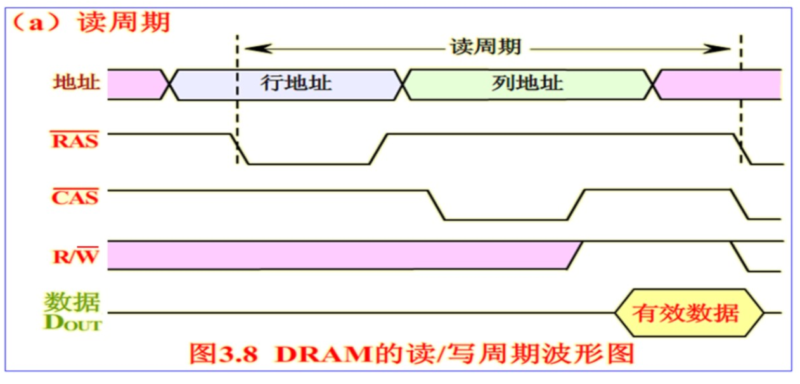
DRAM 的刷新操作： - 集中式刷新 - 分散式刷新：在任何一个存储周期内，分为访存和刷新两个子周期。访存时间内，供 CPU 和其他主设备访问；刷新时间内，对 DRAM 的某一行进行刷新 - 异步刷新：集中和分散的折中的办法，在单元刷新间隔 2ms 内均匀地把各行刷新一遍
DRAM 和 SRAM 的比较：
| 比较内容 | SRAM | DRAM |
|---|---|---|
| 存储信息 0 和 1 的方式 | 双稳态触发器 | 极间电容上的电荷 |
| 电源不掉电时 | 信息稳定 | 信息会丢失 |
| 刷新 | 不需要 | 需要 |
| 集成度 | 低 | 高 |
| 容量 | 小 | 大 |
| 价格 | 高 | 低 |
| 速度 | 快 | 慢 |
| 适用场合 | Cache | 主存 |
ROM
| 存储器 | 类别 | 擦除方式 | 能否单字节修改 | 写机制 |
|---|---|---|---|---|
| MROM | 只读 | 不允许 | 否 | 掩膜位写 |
| PROM | 写一次读多次 | 不允许 | 否 | 电信号 |
| EPROM | 写多次读多次 | 紫外线擦除，脱机改写 | 否 | 电信号 |
| E\(^2\)PROM | 写多次读多次 | 电擦除，在线改写 | 能 | 电信号 |
| Flash Memory | 写多次读多次 | 电擦除，在线改写 | 否 | 电信号 |
并行存储器
- 双端口存储器，一个存储器，两套读写电路
- 多模块交叉存储器
- 特点：通过改进主存的组织方式，在不改变存储器存取周期的情况下，提高存储器的带宽
- 结构特点：多体交叉存储器由M个的存储体（或称存储模块）组成，每个存储体有相同的容量和存取速度，又有各自独立的地址寄存器、地址译码器、读写电路和驱动电路
- 编址方法：交叉编址，即任何两个相邻地址的物理单元不属于同一个存储体，一般在相邻的存储体中；同一个存储体内的地址都是不连续的
Cache 存储器
- Cache 的命中率：命中次数 / 总访问次数
- cache/主存系统的平均访问时间 \(t_a\)：(命中次数cache 读取时间 + 未命中次数主存读取时间)/总访问次数
- 访问效率：cache 读取时间/平均访问时间
- 地址映射方式：全相联映射方式、直接映射方式、组相联映射方式
- 全相联映射方式：允许主存中的任意块映射在 cache 中，（标记）、字地址，高速比较器难实现，只适合小容量 cache 使用。
- 直接映射方式：cache 行号 = 主存行号 mod cache 总行数，主存地址：区号（除数，也是标记，长度是主存行数的log减去cache行数的log）、区内行号（余数，对应 cache 行数）、字地址，只适合大容量 cache 使用
- 组相联映射方式：cache 组号 = 主存行号 mod cache 总组数，把 cache 分成 u 组，每组 v 行，主存地址：区号（除数，也是标记，长度是主存行数的log减去cach组数的log）、区内组号（余数，对应 cache 组数）、字地址，适合大容量 cache 使用。
- cache 的替换策略：最不经常使用算法（LFU）、近期最少使用算法（LRU）、随机替换（用的最多、最流行）
- cache 的写操作策略：写回法（命中时只修改 cache 的内容，当行被换出时才修改主存）、全写法（命中时同时修改 cache 内容和主存内容）、写一次法（写命中和写未命中的处理方法与写回法相同，除了第一次写命中时要写入主存）
4 指令系统
指令系统的发展与性能要求
- 指令
- 微指令，微程序级的指令，属于硬件
- 机器指令，介于二者之间，简称指令
- 宏指令，若干条机器指令组成的软件指令，属于软件
- 指令系统（指令集） 一台计算机中所有机器指令的集合
- 性能要求
- 完备性
- 有效性
- 规整性
- 兼容性
指令格式
- 概念
- 指令字（指令） 表示一条指令的机器字
- 操作码
- 地址码
- 二地址指令
- 存储器 - 存储器 (SS)
- 寄存器 - 寄存器 (RR)
- 寄存器 - 存储器 (RS)
- 指令字长度
- 单字长指令 指令字长度 = 机器字长度
- 半字长指令 指令字长度 = 机器字长度/2
- 双字长指令 指令字长度 = 机器字长度*2
- 指令助记符：MOV 啥的
操作数类型
- 一般数据类型
- 地址数据
- 数值数据
- 字符数据
- 逻辑数据
指令和数据的寻址方式
- 指令的寻址方式
- 顺序寻址
- 跳跃寻址
- 操作数的寻址方式
- 概念 形成操作数有效地址的方法
- 注意偏移寻址包含
- 相对寻址
- 基址寻址
- 变址寻址
| 方式 | 算法 | 主要优点 | 主要缺点 |
|---|---|---|---|
| 隐含寻址 | 操作数在专用寄存器 | 无存储器访问 | 数据范围有限 |
| 立即寻址 | 操作数=A | 无存储器访问 | 操作数幅值有限 |
| 直接寻址 | EA=A | 简单 | 地址范围有限 |
| 间接寻址 | EA=(A) | 大的地址范围 | 多重存储器访问 |
| 寄存器寻址 | EA=R | 无存储器访问 | 地址范围有限 |
| 寄存器间接寻址 | EA=(R) | 大的地址范围 | 额外存储器访问 |
| 偏移寻址 | EA=A+(R) | 灵活 | 复杂 |
| 段寻址 | EA=A+(R) | 灵活 | 复杂 |
| 堆栈寻址 | EA=栈顶 | 无需给出存储器地址 | 需要堆栈指示器 |
典型指令
| 对比项目 | CISC | RISC |
|---|---|---|
| 指令系统 | 复杂、庞大 | 简单、精简 |
| 指令数目 | 一般大于 200 条 | 一般小于 100 条 |
| 指令字长 | 不固定 | 定长 |
| 可访存指令 | 不加限制 | 只有 Load/Store 指令 |
| 各种指令执行时间 | 相差较大 | 绝大多数在一个周期内完成 |
| 各种指令使用频度 | 相差很大 | 都比较常用 |
| 通用寄存器数量 | 较少 | 多 |
| 目标代码 | 难以用优化编译生成高效的目标代码程序 | 采用优化的编译程序，生成代码较为高效 |
| 控制方式 | 绝大多数为微程序控制 | 绝大多数为组合逻辑控制 |
| 指令流水线 | 可以通过一定方式实现 | 必须实现 |
5 中央处理器
CPU 的功能和组成
- CPU 的功能
- 指令控制
- 操作控制
- 时间控制
- 数据加工
- 算术运算
- 逻辑运算
- CPU 的组成
- 运算器
- ALU
- 通用寄存器
- 数据缓冲寄存器 DR
- 程序状态字寄存器 PSW
- 控制器
- 程序计数器 PC
- 指令寄存器 IR
- 指令译码器 ID
- 时序产生器 TG
- 操作控制器 OC
- 运算器
- CPU 中的主要寄存器
- DR，数据缓冲寄存器
- IR，指令寄存器
- PC，程序计数器
- AR，地址寄存器
- 通用寄存器
- PSWR，程序状态字寄存器
- 操作控制器与时序产生器
- 操作控制器
- 硬布线控制器
- 微程序控制器
- 时序产生器，操作控制器产生的时序信号必须定时，为此必须有时序产生器
- 操作控制器
指令周期
- 概念
- 指令周期是取出一条指令并执行这条指令的时间
- 指令周期常用若干个 CPU 周期数来表示，CPU 周期又称为机器周期
- 单周期 CPU
- 一个时钟周期内完成从取指到得到结果的所有工作，效率低。目前不采用
- 多周期 CPU
- 指令周期分为若干个阶段，每个阶段在一个时钟周期内完成
- 指令周期分分两阶段：取指令、执行指令 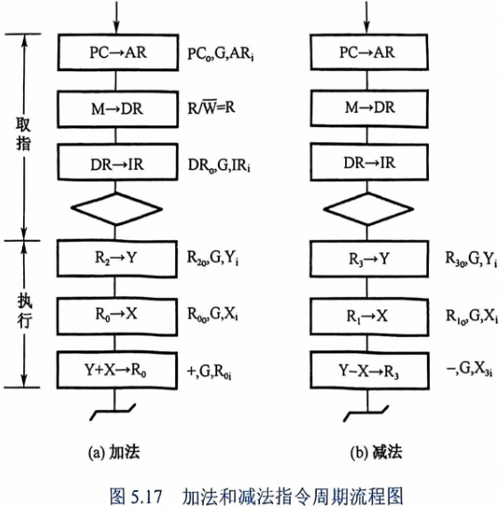
- 总结
- 一个时钟脉冲 \(\hArr\) 一个时钟周期
- 若干个时钟周期 \(\hArr\) 一个机器周期
- 若干个机器周期 \(\hArr\) 一个指令周期
时序产生器和控制方式
- 时序信号的作用和体制
- 作用
- 控制器用时序信号指挥机器工作
- 通过时序控制来识别指令和数据
- 一个 CPU 周期的时钟脉冲对 CPU 的动作有严格的约束
- 体制
- 基本体制：电位-脉冲制
- 硬布线控制器：主状态周期-节拍电位-节拍脉冲三级体制
- 微程序控制器：节拍电位-节拍脉冲二级体制
- 作用
- 时序信号产生器 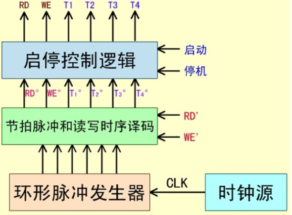
- 控制器的控制方式
- 概念：控制不同操作序列的时序信号的方法
- 同步控制方式：在任何情况下，已定的指令在执行时所需的机器周期数和时钟周期数都固定不变
- 异步控制方式：每条指令、每个操作控制信号需要多少时间就占用多少时间
- 联合控制方式：前两种的结合，
- 机器周期能固定就固定，实在不行以执行部件的回答信号作为操作的结束
- 机器周期的节拍脉冲数是固定的，各条指令周期的机器周期数不固定
微程序控制器
- 概念
- 基本工作原理：仿照通常的解题方法，把操作控制信号编成微指令，存放到一个只读存储器里
- 微命令：控制部件通过控制线向执行部件发出各种控制指令
- 微操作：执行部件接受微命令后所进行的操作
- 状态测试：执行部件执行完成后，向控制部件反映操作情况
- 相容/相斥的微操作：同时或同一个 CPU 可以并行执行的微操作/不能同时或不能在同一个 CPU 并行执行的微操作
- 微指令：在一个 CPU 周期中，一组实现一定操作功能的微命令的组合
- 微程序：微指令序列
- 微程序控制器组成
- 控制存储器，存放实现全部指令系统的微程序
- 微指令寄存器，存放由控制存储器读出的一条微指令信息
- 微地址寄存器
- 微命令寄存器
- 地址转移逻辑，当微程序出现分支时，承担自动完成修改微地址的任务
- CPU 周期与微指令周期的关系：一个 CPU 周期 = 微指令周期（取微指令 + 执行微指令）
- 机器指令与微指令的关系：一条机器指令对应一个微程序，一个微程序包含若干条微指令，一条微指令包含若干微命令
- 微命令编码
- 直接表示法，控制字段的每一位代表一个微命令
- 编码表示法，把一组相斥性的微命令组成一个小组（字段）
- 混合表示法，把前两种方法混用
- 微地址的形成方法，产生后继微地址的方式
- 计数器方式
- 多路转移方式
- 微指令格式：
- 水平型微指令：控制字段 + 判别测试字段 + 下地址字段
- 垂直型微指令：微操作码 + 源寄存器编址 + 目的寄存器编址 + 其他，由微操作码指定操作类型
- 水平型微指令并行性好、执行一条微指令时间短、微程序短指令字长、较难掌握 \(hArr\) 垂直型微指令刚好相反
硬布线控制器
硬布线控制器的各种控制操作都是由硬件电路实现的，所以运行速度要比在同样半导体工艺下的微程序控制器快很多。但是电路复杂、增加修改指令需要修改电路
流水 CPU
- 并行处理技术：时间并行、空间并行
- 流水线分类
- 指令流水线
- 算数流水线
- 处理机流水线
- 流水线的主要问题
- 资源相关
- 数据相关
- 控制相关
- 延迟转移法
- 转移预测法
- \(k\) 级流水线执行 \(n\) 个任务时的加速比：\(C_k=\frac{TL}{Tk}=\frac{n\cdot k}{k+(n-1)}\)
6 总线系统
总线概念和结构形态
- 概念 构成计算机系统的互联机构，多个系统功能部件之间进行数据传送的公共通路。
-
总线的特性
- 物理特性（物理连接方式，包括总线的根数、插头、形状、引脚线排列方式）
- 功能特性（描述每一根线的功能，如位宽，我们说数据线的宽度指的就是位宽，而说总线的宽度则往往指的是物理宽度）
- 电气特性（每一根线上信号的传递方向及有效电平范围）
- 时间特性（每根线在什么时间有效）
-
总线的连接方式 单总线结构、多总线结构
- 挂在总线上的设备通过适配器（亦称接口）与 CPU 相连
- 多总线结构中，通过不同类型的桥拓展出不同层次的总线，分别连接高中低速设备
-
现代总线结构包括以下四部分：
- 数据传送总线 包括地址线、数据线、控制线
- 仲裁总线 包括总线请求线和总线授权线
- 中断和同步总线 包括中断请求线和中断认可线
- 公用线 包括时钟信号线、电源线、地线、系统复位线、加断点时序信号线
-
北桥 CPU 总线 - PCI 总线
- 南桥 PCI 总线 - ISA 总线
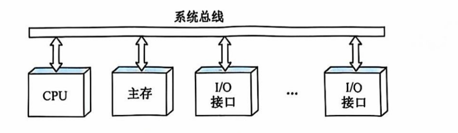
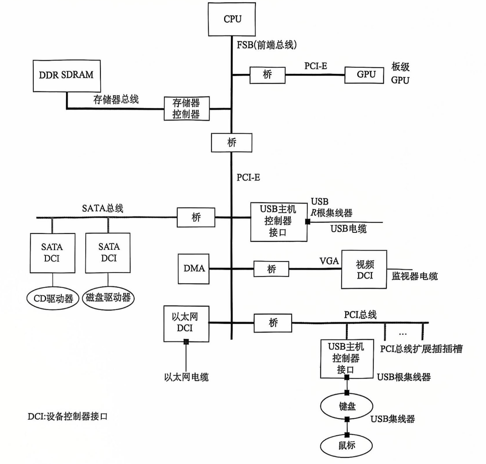
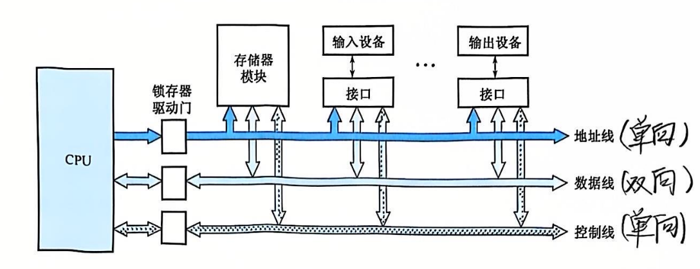
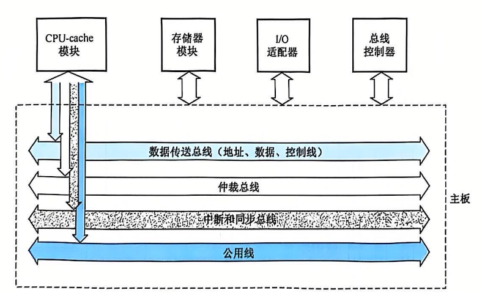
总线接口
- 总线中信息的两种传送方式：串行传送和并行传送
- 串行传送：数据线上一个时钟脉冲一个数据位，串行传送时低位在前、高位在后。因为成本低适合长距离传输
- 并行传送：数据线上同时传输多个数据位，一般采用电位传送
- 分时传送：总线复用
- I/O 功能模块，亦即 I/O 接口、适配器 具有以下功能：
- 控制
- 缓冲
- 状态
- 转换 串并转换或并串转换
- 整理
- 程序中断
总线仲裁
-
连接到总线上的功能模块共有两种形态：
- 主动 主方，可以启动一个总线周期，可以是 CPU
- 被动 从方，总线周期由其他模块发起，可以是 CPU、存储器模块
-
多个主设备提出的占用总线请求，采用优先级或公平策略进行仲裁
- 按照总线仲裁电路的位置不同，分为集中式仲裁和分布式仲裁
-
集中式仲裁
- 链式查询方式 亦即菊花链式查询。离总线仲裁器越近则优先级越高。优点是容易扩充设备，缺点是坏了一个设备，其后的设备都不能正常工作。
- 计数器定时查方式 请求设备发送信号后，总线仲裁器的计数器开始计数（从 0 或者上次的 中止点），当计数的值和某发出请求的（可能有多个设备发出了请求）设备的地址相等时，仲裁器将总线授权给该设备。优点是可以动态改变设备优先级，实质上使得每个设备获得总线的授权的优先级相等。代价是增加了线的数量
- 独立请求方式 每个设备都有两条专线用来发送总线请求和接受总线授权，然后在总线仲裁器中排队。优点是响应速度快，优先次序控制灵活，缺点是线有亿点点多。但现代总线标准就是她
-
分布式仲裁 每个潜在的主设备都可以向总线仲裁器发送请求（唯一仲裁号），每个仲裁器把仲裁总线上的号与自己的进行比较，仲裁总线上的号大，不予响应，并撤销其仲裁号。最后获胜者的仲裁号保留在仲裁总线上
总线定时和数据传送模式
- 总线定时
- 同步总线定时协定 事件出现在总线上的时刻由总线时钟信号来确定，所以总线中包含时钟信号线
- 异步总线定时协定 后一事件出现在总线上的时刻取决于前一事件出现的时刻，即建立在应答式或互锁机制基础上
- 半同步总线定时协定（现代常用） 整体仍采用同步总线协定方式，不同之处是增加了一根联络信号线，由此信号线上的信号决定是否要增加时钟周期
- 周期分裂式总线定时协定
- 数据传送模式
- 读、写操作
- 块传送操作（突发、猝发式传送）
- 写后读、读修改写操作
- 广播、广集操作
PCI 总线和 PCIe(Peripheral Component Interconnect Express) 总线
好像不考
8 输入、输出（I/O）系统
CPU 与外设之间的信息交换方式
- 通过I/O 接口与外设交互
- 端口 接口内可直接被 CPU 访问的寄存器，下面都是端口：
- 命令口 接口内可接收来自主控设备的控制命令的寄存器
- 状态口 接口内向 CPU 报告 I/O 设备的工作状态的寄存器
- 数据口 接口内在外设和总线间交换数据的缓冲寄存器
- 端口的编址方式
- 统一编址方式（和内存单元联合在一起编排地址，可用访存指令访问 I/O 设备接口内的寄存器）
I/O独立编址方式（访存和访问 I/O 设备使用不同的指令，有访问 I/O 设备的专门 I/O 指令组）
I/O 接口与外设间的数据传送方式
- 无条件传送方式
- 应答方式
- 同步传送方式
CPU 与 I/O 接口之间的数据传送方式
- 无条件传送方式
- 程序查询方式
- 主要由程序实现
- 电路简单，缺点是 CPU 要等得太久
- 程序中断方式 主要由程序实现
- 直接内存访问（DMA）方式 主要由硬件实现
- 通道和输入/输出处理器 主要由硬件实现
程序查询方式
- 由程序实现
- 接口
- 设备选择电路
- 数据缓冲寄存器
- 设备状态标志
- 轮询设备
程序中断方式
- 中断的基本概念
- 中断是一种程序随机切换的方式，有时也统称为异常。但不是所有的中断都是随机发生的，比如软中断。
- 中断服务程序入口地址的获取
- 向量中断
- 查询中断
- 程序中断方式的基本 I/O 接口
- RD，准备就绪触发器
- EI，允许中断触发器，可以产生中断禁止，从设备的角度禁止中断
- IR，中断请求触发器
- IM，中断屏蔽触发器，可以产生中断屏蔽，从
CPU的角度屏蔽所有中断
- 单级中断
- 多级中断
DMA 方式
- DMA 的基本概念
- 直接内存访问（
DMA）是一种完全由硬件执行的 I/O 交换的工作方式，DMA控制器从CPU完全接管对总线的控制，数据交换不经过CPU，而直接在内存和 I/O 设备之间进行
- 直接内存访问（
- DMA 的基本操作
- 外围设备发出 DMA 请求
- CPU 响应请求，把 CPU 工作改成 DMA 操作方式，DMA 接管总线
- DMA 寻址并传送数据
- DMA 向 CPU 报告操作结果
- DMA 传送方式
- 成组连续传送（一次只传送一组数据，CPU 空闲时再传送下一组数据，占用 CPU 大量周期）
- 周期挪用方式（一个个地、分散的地占用内存周期）
- 透明 DMA 方式（半个半个地占用内存周期）
- DMA 控制器的基本组成
- 内存地址计数器
- 字计数器
- 数据缓冲寄存器
- DMA 请求标志
- 控制/状态逻辑
- 中断机构
- DMA 数据传送过程
- 传送前预处理
- 正式传送
- 传送后处理
- 选择型和多路型 DMA 控制器
通道方式
- 通道的功能
- 通道是一个特殊功能的处理器，即 CPU 把传输控制的功能下放给通道，CPU 只负责数据处理
- 有 CPU 总线和通道总线（即 I/O 总线），两类总线可以按照自己的时序进行工作
- 通道的五个任务
- 接受 CPU 的 I/O 指令，按指令与外围设备通信
- 从存储器获取通道指令、译码后发送命令
- 组织数据传送
- 得到外围设备信息
- 向 CPU 报告中断请求
- CPU 对通道的管理
- 管态： CPU 运行管理程序
- 目态： CPU 执行目的程序，此时不能运行 I/O 指令
- 通道对设备控制器的管理
- 通道控制 I/O 模块进行数据传输
- 通道类型
- 选择通道（高速通道）
- 多路通道（多路转换通道），如数组多路通道、字节多路通道
输入/输出处理器（I/O Processor）
| 特性 | I/O处理器（IPO） | DMA（直接存储器访问） |
|---|---|---|
| 功能 | 负责全面的I/O管理和数据传输 | 仅负责数据传输 |
| 复杂性 | 复杂，类似于一个小型处理器 | 简单，主要是硬件模块 |
| 对CPU的依赖 | 减少CPU参与，独立完成I/O任务 | 需要CPU启动和管理 |
| 任务范围 | 包括设备管理、状态监控和数据传输 | 仅限于数据传输 |
| 并行性 | 与CPU并行工作，独立完成任务 | 数据传输时CPU可执行其他任务 |
| 应用场景 | 复杂I/O管理场景，多设备并发操作 | 简单、高速数据传输场景 |
| 硬件成本 | 高 | 低 |
复习纲要
题型
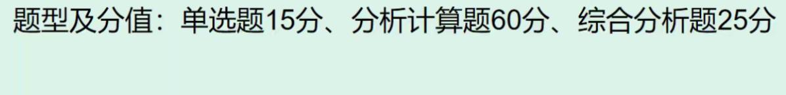
题型、分值比例和去年卷子一样。题型及分值：单选题 15 分、分析计算题 60 分、综合分析题 25 分
选择题：
- 选择题难度比上次低
- 冯 · 诺依曼计算机
- 计算机体系 - 弗林分类法
- CISC RISC
- 哈佛结构
分析计算题：
- 第一道计算大题性能分析
- 性能指标 (P5，例1.1，分析计算题)
- 计算机性能评价 (P5，例1.1，分析计算题)
- 第二道大题运算器部分
- 第三道大题存储系统
- 第四道是指令集
综合题：
- 外设子系统
- CPU 控制器分析，模型机指令执行过程分析（最后一道大题，15，给模型机，分析指令执行过程）
计算机系统基础知识（10分）
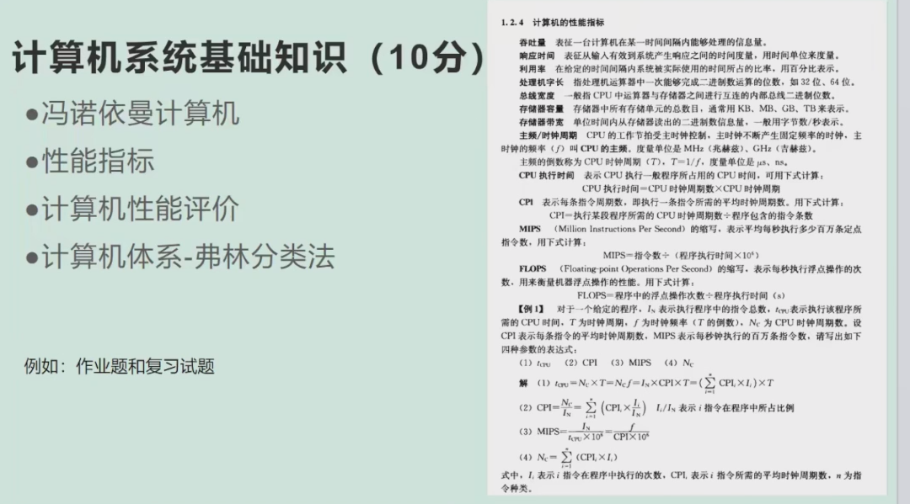
- 冯 · 诺依曼计算机（<- 选择题）
- 性能指标(P5，例1.1，分析计算题)
- 计算机性能评价(P5，例1.1，分析计算题)
- 计算机体系 - 弗林分类法（SMP形式，多指令流、多数据流 <- 选择题，多处理机 ）
- CISC RISC（指令集、控制器，<-选择题）
- 哈佛结构（指令高速缓存和数据高速缓存分开，CPU 控制器章节，<-选择题）
| 指标 | RISC | CISC |
|---|---|---|
| 指令集 | 一个周期执行一条指令，简单指令组合实现复杂操作，指令长度固定 | 指令长度不固定，执行需要多个周期 |
| 流水线 | 流水线每周期前进一步 | 指令执行需要调用微代码的一个微程序 |
| 寄存器 | 更多通用寄存器 | 用于特定目的的专用寄存器 |
load/store 结构 |
独立的 load 和 store 指令完成数据在寄存器和外部存储器之间的传输 |
处理器能够直接处理存储器中的数据 |
| 控制器 | 硬布线控制器 | 微程序控制器 |
| 指令长度 | 固定 | 不固定 |
| 目标 | 设计目标是提高指令执行效率，优化流水线性能 | 减少程序的指令数量，降低编程复杂度 |
| 指令格式 | 简单，长度固定（通常为4字节） | 复杂，长度不固定 |
| 指令数量 | 数量少，通常只有几十条到一百多条指令 | 数量多，通常包含数百条甚至上千条指令 |
| 寻址方式 | 寻址方式简单，通常只支持少量的寻址模式 | 支持多种复杂的寻址方式 |
| 实现方式 | 采用硬连线逻辑（Hardwired Control）实现指令的快速解码和执行 | 通过微程序（Microprogramming）实现复杂指令的解码和执行 |
运算子系统（20分）
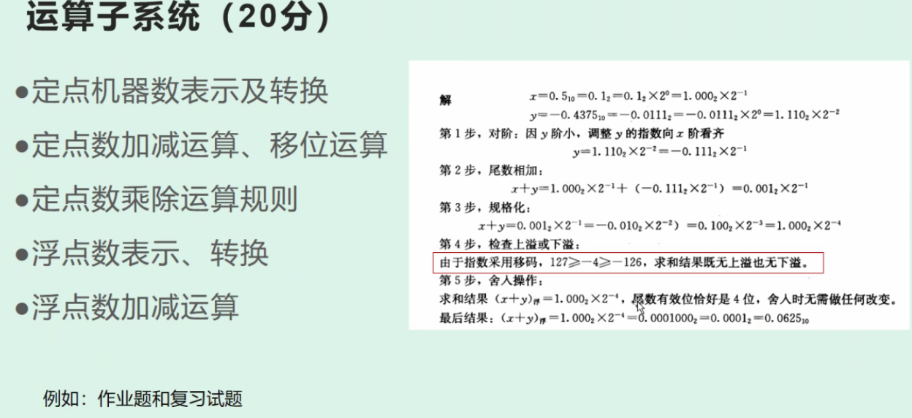
- 定点机器数表示以及转换（真值、原码、补码、反码、移码转换，0 、-1的上述几种码是什么样的）
- 定点数加减运算、移位运算（逻辑移位、算数移位）
- 定点数（表示范围）乘除运算规则（符号、数值、商、余数怎么得到的，阵列乘法器大概过一遍）
- 浮点数表示、和真值转换（表示范围）
- 浮点数加减运算（53 页算步骤标准）
控制子系统（30分，合起来四五章）
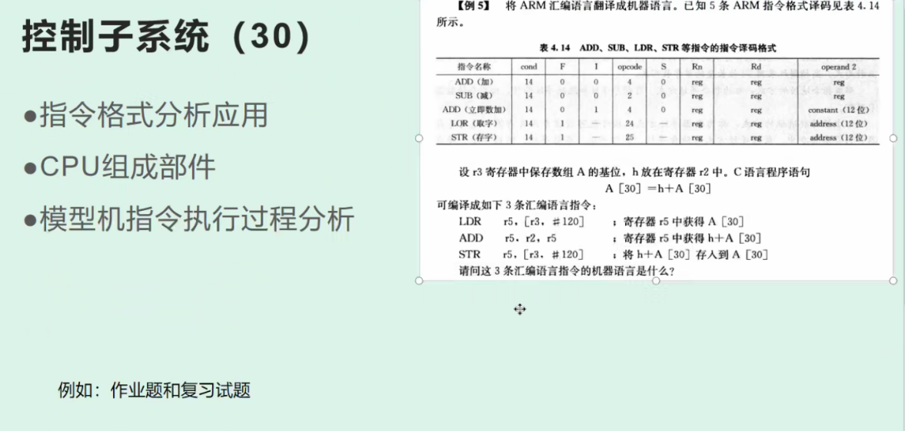
- 指令格式分析、应用（比雨课堂作业难一些，和 23 年的差不多，有难度，P141）
- CPU 组成部件（ALU 有哪些，控制器、取指令、译码、分析指令的过程，需要的器件，单总线、双总线、三总线）
- 模型机指令执行过程分析（最后一道大题，15，给模型机，分析指令执行过程）
存储子系统（25分）
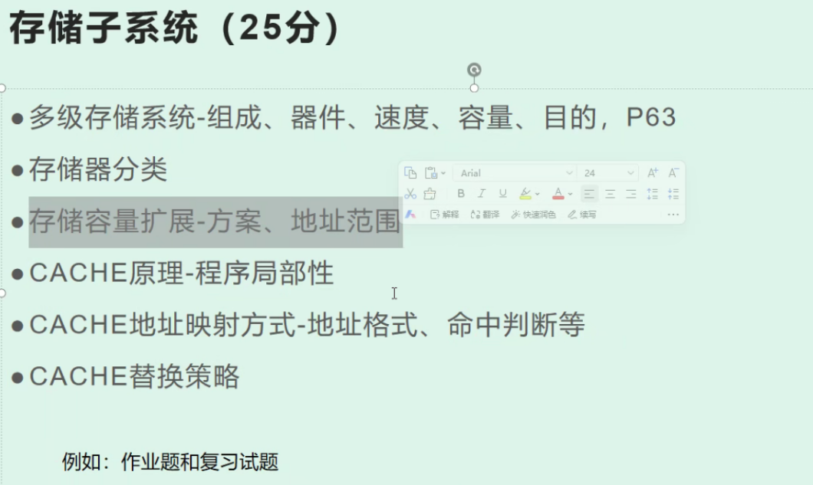
- 多级存储系统 - 组成、器件、速度、容量、目的，P63
- 多级存储器构成
- 速度由快到慢是哪些
- 容量由大到小是哪些
- 几个不同层次的构建目的、构建用了什么器件
- 存储器分类（RAM、ROM、紫外线）
- 存储容量扩展 - 方案（不会考画图，太难）、地址范围（分析计算题）
- CACHE原理 - 程序局部性（时间局部性、空间局部性）
- CACHE地址映射方式-地址格式、命中判断等
- CACHE替换策略（LFU、LRU、FIFO、随机，特点，哪种效率高且考虑到程序局部性原理）
- 写策略（写直达法、写一次法，关系数据一致性）
I/O子系统（25分）六、八
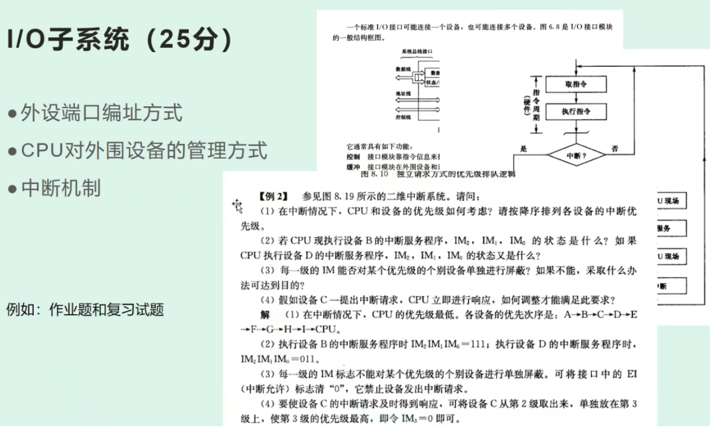
看 197、250、256（例 8.2，优先级、中断屏蔽、怎么通过中断屏蔽寄存器动态修改优先级）
- 外设端口编址方式
- CPU 对外围设备的管理方式（五种，特点、适用场合）
- 中断机制（中断源、中断识别、优先级、响应返回过程、嵌套）
- 中断发生条件
- （源）中断源发出中断请求
- （蔽）中断未被屏蔽
- （优）中断优先级满足要求
- （开）当前CPU状态允许中断，即开中断
- （指）当前指令执行结束
- 中断向量有效，能够正确找到中断服务程序
| 管理方式 | 特点 | 适用场合 |
|---|---|---|
| 程序直接控制方式 | 简单、效率低、CPU占用高 | 低速设备、实时性要求低的场景 |
| 程序中断方式 | 减少轮询、提高CPU利用率 | 中速设备、实时性要求中等的场景 |
| DMA方式 | 数据传输快、CPU负担小 | 高速设备、大量数据传输场景 |
| 通道控制方式 | 独立通道处理器、并行性高 | 大型计算机系统、多个高速设备场景 |
| I/O处理器方式 | 专用I/O处理器、性能高、成本高 | 高性能计算机、大量并发I/O场景 |
做题总结
- 计算连续地址编码时，从右至左分组，从左至右取片选位
- 在比较 sb 浮点数和定点数的优劣时，要注意是否有前提位数相同
- 注意外设端口和接口的区别，外设端口是寄存器
- 中断响应的处理步骤：关中断 ⇒ 保存断点 ⇒ 保护现场 ⇒ 判别中断条件转入中断服务程序 ⇒ 开中断 ⇒ 中断事件处理 ⇒ 关中断 ⇒ 恢复现场 ⇒ 恢复断点 ⇒ 开中断 ⇒ 返回断点
- 每次总线操作，只能有一个主方占用总线控制权，但同一时间里可以有多个从方
- 中断隐指令操作：
- 读取服务程序入口地址
- 保存/恢复断点、现场
- 开/关中断（修改的就是 IM 触发器）
- 串行接口与总线之间的数据传输是并行传输的，与外设之间的数据接口是串行传输的
- 并行接口与总线、外设之间的数据传输，都是并行传输的
- DMA 的接管过程
- Cache 既属于 CPU 也属于内存
- 转移指令的执行并不总是修改PC的值为转移的目标地址，只有当转移条件为真时才修改
- 移码的符号表示规律和原码、补码、反码相反
- 多体交叉存储器提高读/写操作速度的原因是采用流水技术